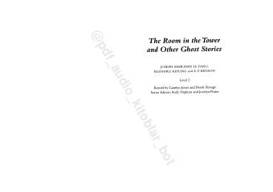

TRMashhur yozuvchilar qalamiga mansub ingliz tilidagi qiziqarli va qo'rqinchli hikoyalar to'plami.
Ushbu kitob ingliz tilini o'rganuvchilar uchun moslashtirilgan mashhur yozuvchilarning qo'rqinchli hikoyalar to'plamidir. To'plamdan J. S. Le Fanu, Rudyard Kipling va E. F. Benson qalamiga mansub sirli va vahimali voqealar o'rin olgan.